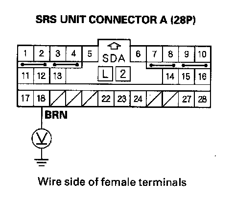
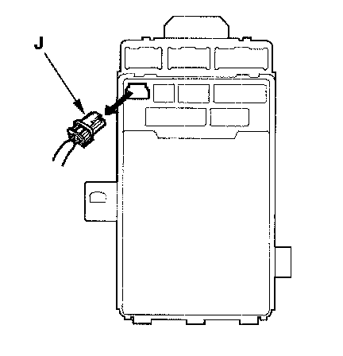
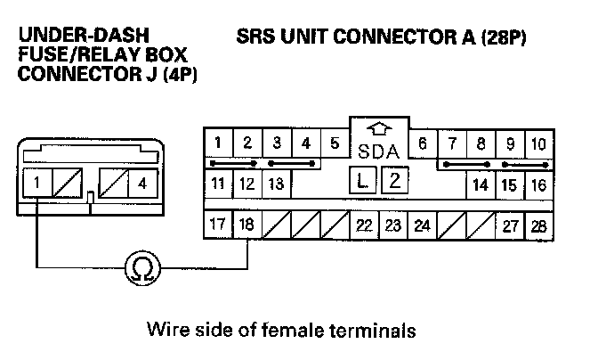

DTC A2-1x
DTC A2-1x ("x" can be 0 thru 9 or A thru F): Faulty Power Supply (VB Line)1. Check the No. 11 (10 A) fuse in the under-dash fuse/relay box.
Is the fuse OK?
YES - Go to step 2.
NO - Replace the fuse, then turn the ignition switch ON (II). If the fuse blows again, check for a short to ground in the under-dash fuse/relay box No. 11 (10 A) fuse line, in the dashboard wire harness; replace the under-dash fuse/relay box.
2. Turn the ignition switch OFF. Disconnect the negative cable from the battery, and wait for 3 minutes.
3. Disconnect SRS unit connector A (28P) from the SRS unit.
4. Reconnect the negative cable to the battery.

5. Connect a voltmeter between the No. 18 terminal of SRS unit connector A (28P) and body ground. Turn the ignition switch ON (II), and measure voltage. There should be battery voltage when the ignition on.
Is there battery voltage?
YES - Faulty SRS unit or poor connection at SRS unit connector A (28P) and the SRS unit; check the connection. If the connection is OK, replace the SRS unit.
NO - Go to step 6.
6. Turn the ignition switch OFF.

7. Disconnect under-dash fuse/relay box connector J (4P).

8. Check resistance between the No. 1 terminal of the under-dash fuse/relay box connector J (4P) and the No. 18 terminal of SRS unit connector A (28P). There should be 0 - 1.0 ohm.
Is the resistance as specified?
YES - Open in the under-dash fuse/relay box or poor connection between connector S (4P) and the under-dash fuse/relay box; check the connection. If the connection is OK, replace the under-dash fuse/relay box.
NO - Open in the dashboard wire harness; replace the dashboard wire harness.